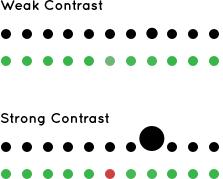

Preface

If you're like most people, you feel like a baby when it comes to communicating visually. You sometimes have a vague sense of what you want, but can't articulate it or make it come about; all you can do is point and cry. This guide will help you will help you communicate with conscious skill. It will show you how to create designs that are easy to understand and attractive.

Beyond giving you practical tools, I hope this guide inspires you. One of my favorite quotes is, "I open my eyes and I see paradise." What a great gift vision is. What an incredible way to connect to the world around us and to each other. My hope is that this guide will allow you to communicate with a little more creativity and a little more control – and that you'll want to learn more.
1. What is Clean Design?
A clean design is one that helps people easily answer questions like "Is this document the one I'm looking for?" and "What text explains this chart?" and "By what date is the ransom due?".
More abstractly, a clean design uses visual cues to help your users' brains understand how elements are related and what's important so that they may then meet their informational they needs.

1.1. Helping Meet Informational Needs
Whatever you're creating — a brochure, a resume, a web page — - people have the same basic informational needs when looking at your documents:
- Deciding relevance. Is this even the right document?
- Getting an overview. What are the main ideas? What's most important?
- Basic comprehension. What text explains this chart?
- Retrieving buried details. I remember something about an orangutan... where was that?
- Finding actionable details. How do I get in touch?
The informational needs of a single person will usually evolve in roughly the order listed above. For example, if someone's looking at a brochure, his thought process might be something like:
- I want to find a good phrenologist. Does this have info on phrenologists? Oh frabjous day! It does!
- What services do they provide? Are they certified? Are they local? My heavens — yes, yes, and yes!
- How do I get in touch? Oh goody, there's the phone number! I'll call when I get home.
- (Later, at home) Now where was that number...
1.2 Showing How Elements Are Related
Your document is well-organized when it's easy to see which parts are related to each other.
1.3 Showing What's Important
It's easy to identify the different kinds of information. Different topics and different functions.
2. How do I, Jane Schmane, Clean Up My Mess?
A good design takes advantage of the way our visual brain works in order to exhibit organization and findability.
Visual Thinking
You convey ideas by the way you arrange a design's elements in relation to each other. These ideas are understood immediately, if not consciously, by the people viewing your designs. This is great if the visual relationships are obvious and accurate, but if they're not, your audience is going to get confused. They'll have to examine your work carefully, going back and forth between the different parts to make sure they understand.
If you want to feel what this is like, try saying the colors of the words to the right. For example, for the first word you would say "yellow". Now, try saying the words themselves. (This works best in a public place, like a park bench or a coffee shop.)
It's harder to say the color of each word than it is to say the word itself. Our brains automatically determine the semantic meaning of the word. This conflicts with the identification of the color of the word, a process which is not automatic. Our brains must then resolve the conflicting interpretations of the visual stimuli, a process which takes a little work. [cite stroop effect]
These are the kinds of conflicts you inflict upon your poor audiences' grey matter when you communicate visually without knowing what you're doing. Shame on you.
orange green purple blue yellow red orange yellow red blue green purple orange purple yellow green blue red purple green yellow red orange blue yellow purple red blue orange green green yellow blue orange red purple yellow blue red orange green purple yellow orange purple blue red green yellow purple orange red blue green orange yellow blue purple red green purple yellow orange green red blue green red orange yellow blue purple purple yellow orange green blue red purple blue
The Most Important Thing to Remember (This is Very Important! Remember it!)
Your brain sees visual differences as meaningful. If there's not much of a difference, it's hard to tell if it's meaningful. That's what causes frustration! That's what makes people tear out their hair, crying "What the hell did she meeeeeeeean?!?!?!"
2. Contrast
You can use contrast to reveal a document's organization and the importance of its elements. Contrast also provides visual interest, making a design more appealing to look at it.
In figuring out how a design is structured, our brains search for differences in the visual features of elements and attempts to assign meaning to these differences. There are a few basic visual features with which we can easily create contrast, including color, orientation, size, and shape. The contrast among elements must be strong in order to actually convey information; if the contrast is weak, you leave your audience wondering if the differences in presentation actually signify something.

2.1. Organization

A design is well organized when it's easy to identify its components and find specific content within it. Contrast provides organization by making the different components of a design stand out from one another.
Take a look at the screen shot to the left, from the A List Apart home page. You don't even need to be able to read the text to understand the page's organization.
Because the headings contrast so strongly with the surrounding text – using size, color, and font – it's easy to identify each separate article.
Clear contrast also distinguishes the main navigation, using a different background and font style to set it apart.
2.2. Importance
You indicate an element is important by making it more noticeable. Making it larger, highlighting it, and giving it a different color all help an element stand out.
The important thing (pun! hoooo!) to note is that it's difficult to set one element apart as important if all elements are loudly vying for attention.

In the flyer above, the most important elements stand out. This allows the document to be understood (what is this for?) quickly and re-navigated (when are their regular classes?) quickly.
On the web page above, you can get a sense of what the designer is trying to communicate but it takes work. It's hard to focus on anything because every other element is trying to grab your attention.
By the same token, you should make less important information less noticeable. It makes sense to clearly de-emphasize content like footnotes, captions, and citations. You don't want them competing with more important content for attention. At the same time, if they're easily distinguishable, you make it easy for your audience to direct their attention to them when they want. By accurately indicating importance, you allow your audience to use their attention efficiently and without frustration.
2.3. Visual Interest
Accurately revealing organization and importance allows the audience to explore with confidence. They know they won't come across any unwelcome surprises. Like having an accurate map. That's just my guess, though.
3. Proximity
Elements placed close to each other are seen as forming a group sharing a unifying concept. By grouping related content and visuals together you help the user quickly find the information he needs. To prevent confusion and frustration, group elements which are actually related. That sounds obvious, but it's easy to forget. Also, pay attention to spacing between elements - it's easy to space elements such that it's difficult to tell what's grouped with what.
3.1. Grouping
In the same way that grocery stores organize their goods by aisle so that you don't have to walk haphazardly through the store hoping that maybe, just maybe, you'll be able to find the double fudge brownie mix today, using proximity deliberately allows your users to efficiently zero in on the information he needs.
3.2. Relatedness
It seems obvious that you would want to group things together which are actually related. Often, though people just don't do that. I don't think this idea needs much more explanation, so I'll just leave you with some examples of nonsensical grouping as a kind of cautionary tale. Bewaaaaaare!
3.3. Ambiguity and How to Avoid It
In the photos to the left, you have to actually read the captions in order to tell whether they apply to the photo above them or the one below. Now it’s much easier to tell which captions belong with which photos.
You should leave much more whitespace between non-related elements than related elements in order to make the logical groupings visually clear.
4. Alignment
Alignment is crucial to giving your designs a clean appearance and to conveying organization. Slight misalignments are confusing and look messy. On the other hand, positioning and element so that it’s clearly out of alignment is an effective way of making it stand out.
4.1. Organization
Elements sharing alignment are seen as related.
4.2. Cleanliness
Slight misalignments make for more work. Since they don't actually convey information, or rather, they convey misinformation, the result is an impression of messiness.
4.3. Attention
You can make an element stand out by intentionally breaking alignment.
5. Elimination
Often, people like yourself add extra lines, boxes, bullets and other visual hoo-ha in order to convey information that’s adequately conveyed with Contrast, Proximity and Alignment. Including this fluff makes your user’s brain work harder, as it has to figure out the significance of these elements.
5.1. How to Identify Visual Hoo-Ha
Does it say something already said?
5.2. Learn to Embrace White Space
Visual design babies often put in this extra bollocks because they're uncomfortable with white space.